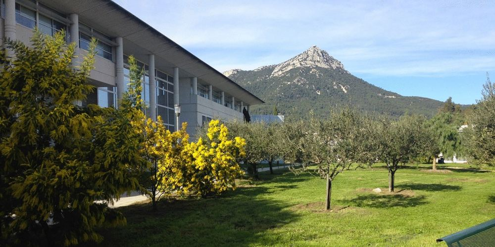
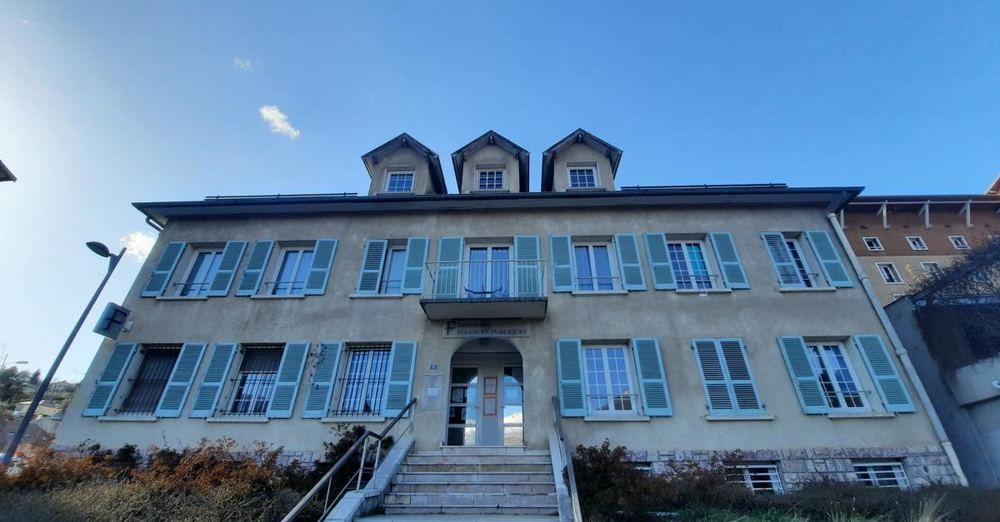
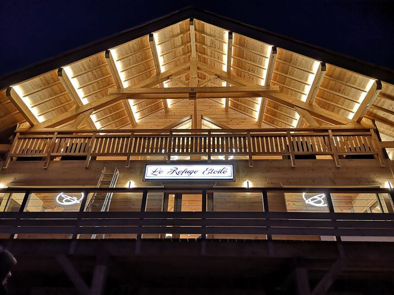

Titulaire d'un Baccalauréat STMG mention Bien, je termine en 2026 un BUT Techniques de Commercialisation à l'IUT de Toulon, spécialité Marketing Digital, E-business & Entrepreneuriat. Trois ans de formation intensive combinant projets réels, stages professionnels et concours nationaux m'ont donné une vision complète du cycle commercial — de l'analyse de marché à la négociation B2B.
Mon projet est clair : décrocher un poste de commercial, en vente et en relation client. Une voie qui réunit mon goût du contact, mon sens du résultat et la rigueur que j'ai développée depuis mon Service Civique aux Finances Publiques — je suis ouvert à tous les secteurs et à toutes les typologies de clientèle (B2B ou B2C).
Nathan a fait preuve d'une grande rigueur, d'une réelle capacité d'écoute et d'un sens du service qui ont marqué l'ensemble de l'équipe — qualités que je rencontre rarement chez un volontaire de cet âge.
Extrait de la lettre de recommandation originale — disponible sur demande
Par ses qualités en conseil à la clientèle et sa probité, il s'est imposé comme un élément de confiance sur qui j'ai pu compter non plus comme stagiaire, mais en tant que salarié. Nathan est un garçon ambitieux et particulièrement motivé par la poursuite de ses objectifs académiques et professionnels.
Extrait de la lettre de recommandation originale — disponible sur demande
Quelques jours en renfort pour la conception et la mise en place de feux d'artifices sur plusieurs sites : Savines-le-Lac, Saint-Raphaël et le Golf de Bayard (au-dessus de Gap). Une expérience rare au cœur de la logistique événementielle pyrotechnique — rigueur, sécurité et travail en conditions réelles sur des sites publics à fort impact visuel.
Organisation complète de l'Assemblée des Chefs de Département TC, événement national réunissant plus d'une centaine de responsables pédagogiques de toute la France. En équipe de 6 : réalisation d'un faux journal télévisé multi-chaînes monté sur Adobe Premiere Pro (~20h de montage), parcours de visite guidée de Toulon, livret d'accueil, signalétique et gestion des flux. Pilotage via matrice RACI et rétroplanning.

Vente, conseil client et animation lors des vacances scolaires, à la suite du stage. Interventions polyvalentes sur plusieurs postes selon les besoins opérationnels, dans un environnement à fort volume de clientèle française et internationale. Développement d'une vraie polyvalence commerciale en environnement touristique de montagne.
Premier stage en entreprise au sein de la Société d'Économie Mixte Locale des Orres (CA hiver 22/23 : 11 M€). Immersion dans les techniques de vente en environnement touristique de montagne, compréhension de la stratégie commerciale d'un opérateur multiactivités et construction d'une première posture professionnelle.
Accueil et accompagnement des usagers au Centre des Finances Publiques d'Embrun dans leurs démarches administratives. Positionné à la Maison France Services d'Embrun en avril-mai pour guider les contribuables lors de leur déclaration d'impôts en ligne. Première immersion dans l'univers financier et fiscal — exigence de rigueur et de pédagogie face à un public très hétérogène. Mission valorisée par une lettre de recommandation de Mme Colette Gaillard, cheffe des impôts des entreprises.

Service en salle, bar et cuisine les week-ends et lors des vacances scolaires. Premier contact avec l'exigence du service client en environnement de montagne — endurance, réactivité et sens du détail dans un cadre à fort volume et sous pression.

Formation bac+3 spécialisée en marketing, vente, marketing digital et e-business & entrepreneuriat. Deux stages professionnels, 11 unités d'enseignement couvrant l'ensemble du cycle commercial. Finaliste au concours national Les Négociales 2025 (36ème édition).
Baccalauréat Technologique Sciences et Technologies du Management et de la Gestion, spécialité Mercatique. Obtenu avec mention Bien en 2022 — premier diplôme ancrant une orientation résolue vers le commerce, le marketing et la gestion.
Vente & négociation
- Négociation commerciale — finaliste national Les Négociales 2025, simulations B2B face à des acheteurs professionnels.
- Argumentation & closing — découverte des besoins, traitement des objections, conclusion de la vente en entretiens réels.
- Prospection commerciale — campagnes d'appels et de prospection digitale, gestion des objections à froid.
- Relation & fidélisation client — suivi de portefeuille, gestion des demandes et relances en environnement à fort volume.
Communication & relationnel
- Écoute active — comprendre les besoins réels de l'interlocuteur avant de construire un argumentaire.
- Aisance relationnelle — forgée au contact de publics variés : clients, professionnels, institutions.
- Prise de parole en public — présentations jury, pitchs, finale nationale face à un acheteur professionnel.
- Esprit d'équipe — projets collectifs en équipe de 4 à 6 personnes sous délais serrés.
Organisation & outils
- Rigueur & gestion du stress — transformer la pression en concentration, éprouvé en compétition nationale.
- Gestion de projet — pilotage d'événements via matrice RACI et rétroplanning, en autonomie.
- Outils — Pack Office, Google Workspace, Canva, WordPress, CRM.
- Anglais C1 — certifié EFSET, séjour professionnel à Malte (EF Education First).
Parmi les 6 000 candidats inscrits à travers la France, 600 ont été sélectionnés pour la grande finale à Nancy — et j'en faisais partie, classé 212e. Un résultat qui place dans le Top 4% des négociateurs étudiants de France 2025, obtenu face à des acheteurs professionnels dans un format de compétition sous haute pression.
À l'issue de mon BUT TC, mon objectif est de décrocher un premier poste de commercial en CDI. Je n'ai pas de secteur imposé — je suis ouvert à toutes les structures et à toutes les typologies de clientèle, B2B comme B2C, en région PACA. La négociation, le sens du résultat et la relation client que j'ai développés tout au long de ma formation et de mes expériences de terrain sont directement transposables à n'importe quel environnement commercial exigeant.
Du 5 juillet au 29 août 2026, je suis parti à Malte avec l'école EF Education First pour suivre des cours d'anglais intensifs et travailler sur place. Résultat : niveau C1 certifié EFSET (14/08/2026) — un atout pour tout poste commercial en contact avec une clientèle internationale. Voir le certificat.